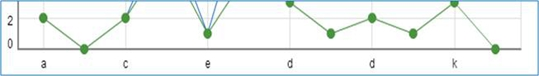
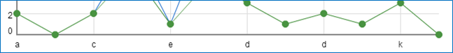
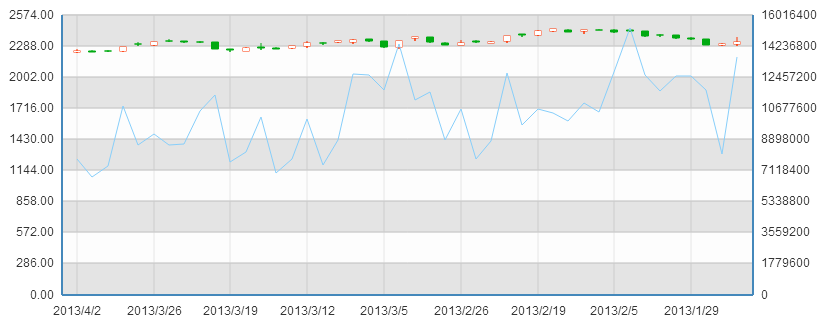
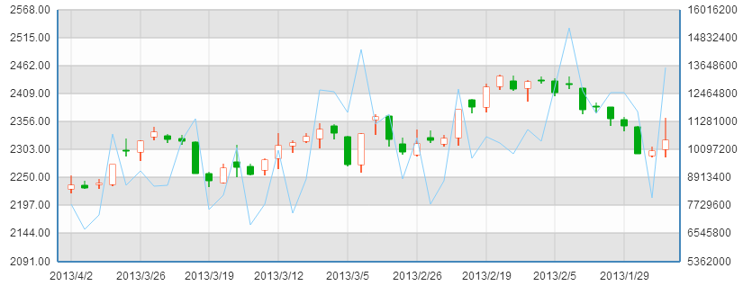
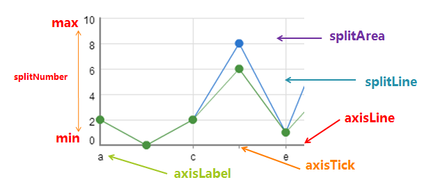

直角坐标系中横轴数组，数组中每一项代表一条横轴坐标轴，仅有一条时可省略数组。最多同时存在2条横轴，单条横轴时可指定安放于grid的底部（默认）或顶部，2条同时存在时位置互斥，默认第一条安放于底部，第二条安放于顶部。 坐标轴有三种类型，类目型、数值型和时间型（区别详见axis），横轴通常为类目型，但条形图时则横轴为数值型，散点图时则横纵均为数值型，具体参数详见axis。
直角坐标系中纵轴数组，数组中每一项代表一条纵轴坐标轴，仅有一条时可省略数组。最多同时存在2条纵轴，单条纵轴时可指定安放于grid的左侧（默认）或右侧，2条同时存在时位置互斥，默认第一条安放于左侧，第二条安放于右侧。 坐标轴有三种类型，类目型、数值型和时间型（区别详见axis），纵轴通常为数值型，但条形图时则纵轴为类目型，具体参数详见axis。
坐标轴有三种类型，类目型、数值型和时间型，他们的区别在于：
类目型：需要指定类目列表，坐标轴内有且仅有这些指定类目坐标
数值型：需要指定数值区间，不指定时则自定计算数值范围，坐标轴内包含数值区间内容全部坐标
时间型：时间型坐标轴用法同数值型，只是目标处理和格式化显示时会自动转变为时间，并且随着时间跨度的不同自动切换需要显示的时间粒度
下面是坐标轴的全部选项，其中个别选项仅在个别类型时有效，请注意适用类型。
| 名称 | 默认值 | 适用类型 | 描述 |
|---|---|---|---|
| {string} type | 'category' | 'value' | 'time' | 'log' | 通用 | 坐标轴类型，横轴默认为类目型'category'，纵轴默认为数值型'value' |
| {boolean} show | true | 通用 | 显示策略，可选为：true（显示） | false（隐藏） |
| {number} zlevel | 0 | 通用 | 一级层叠控制。每一个不同的zlevel将产生一个独立的canvas，相同zlevel的组件或图标将在同一个canvas上渲染。zlevel越高越靠顶层，canvas对象增多会消耗更多的内存和性能，并不建议设置过多的zlevel，大部分情况可以通过二级层叠控制z实现层叠控制。 |
| {number} z | 0 | 通用 | 二级层叠控制，同一个canvas（相同zlevel）上z越高约靠顶层。 |
| {string} position | 'bottom' | 'left' | 通用 | 坐标轴类型，横轴默认为类目型'bottom'，纵轴默认为数值型'left'，可选为：'bottom' | 'top' | 'left' | 'right' |
| {string} name | '' | 数值型，时间型 | 坐标轴名称，默认为空 |
| {string} nameLocation | 'end' | 数值型，时间型 | 坐标轴名称位置，默认为'end'，可选为：'start' | 'end' |
| {Object} nameTextStyle | {} | 数值型，时间型 | 坐标轴名称文字样式，默认取全局配置，颜色跟随axisLine主色，可设 |
| {boolean} boundaryGap | true | 类目型 | 类目起始和结束两端空白策略，见下图，默认为true留空，false则顶头 |
| {Array} boundaryGap | [0, 0] | 数值型，时间型 | 坐标轴两端空白策略，数组内数值代表百分比，[原始数据最小值与最终最小值之间的差额，原始数据最大值与最终最大值之间的差额] |
| {number} min | null | 数值型，时间型 | 指定的最小值，eg: 0，默认无，会自动根据具体数值调整，指定后将忽略boundaryGap[0] |
| {number} max | null | 数值型，时间型 | 指定的最大值，eg: 100，默认无，会自动根据具体数值调整，指定后将忽略boundaryGap[1] |
| {boolean} scale | false | 数值型，时间型 | 脱离0值比例，放大聚焦到最终_min，_max区间 |
| {number} splitNumber | null | 数值型，时间型 | 分割段数，不指定时根据min、max算法调整 |
| {number} logLabelBase | null | value | axis.type === 'log'时生效。指定时，axisLabel显示为指数形式，如指定为4时，axisLabel可显示为4²、4³。不指定时，显示为普通形式，如 1,000,000 |
| {Object} logPositive | null | value | axis.type === 'log'时生效。指明是否使用反向log数轴（从而支持value为负值）。默认自适应，即如果value全为负值，则logPositive自动设为false，否则为true。 |
| {Object} axisLine | 各异 | 通用 | 坐标轴线，默认显示，详见下方 |
| {Object} axisTick | 各异 | 通用 | 坐标轴小标记，默认不显示，详见下方 |
| {Object} axisLabel | 各异 | 通用 | 坐标轴文本标签，详见下方 |
| {Object} splitLine | 各异 | 通用 | 分隔线，默认显示，，详见下方 |
| {Object} splitArea | 各异 | 通用 | 分隔区域，默认不显示，详见下方 |
| {Array} data | [] | 类目型 | 类目列表，同时也是label内容，详见axis.data |
boundaryGap端空白策略
| boundaryGap: true | boundaryGap: false |
|---|---|
|  |  |
scale策略
| scale: false | scale: true |
|---|---|
|  |  |
axis属性说明
